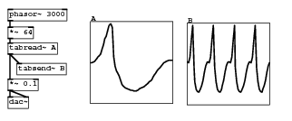
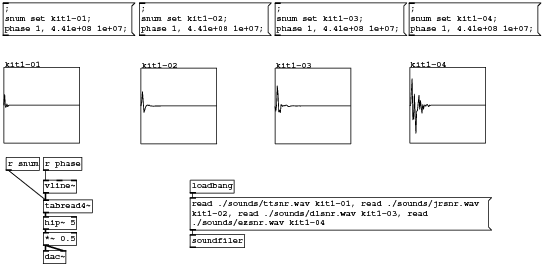
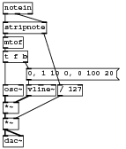

Code examples for “Designing Sound” textbook
Chapter 11: Pure Data Audio Introduction
Table oscillator

#N canvas 52 186 422 174 10; #N canvas 0 0 450 300 graph1 0; #X array A 64 float 1; #A 0 -0.00422644 -0.00422644 0.0100593 0.0243451 0.0672024 0.11006 0.138631 0.167203 0.21006 0.324346 0.424347 0.58149 0.638633 0.767205 0.895777 0.938634 0.938634 0.85292 0.138632 -0.0899407 -0.204227 -0.26137 -0.332799 -0.432799 -0.5328 -0.575657 -0.604228 -0.618514 -0.6328 -0.647086 -0.661371 -0.675657 -0.675657 -0.689943 -0.689943 -0.689943 -0.675657 -0.661371 -0.6328 -0.618514 -0.604228 -0.589943 -0.561371 -0.5328 -0.504228 -0.461371 -0.447085 -0.404228 -0.36137 -0.304227 -0.26137 -0.204227 -0.16137 -0.132798 -0.0899407 -0.0470834 -0.00422606 0.0100597 0.0243455 0.0386313 0.052917 0.052917 0.052917 0.052917; #X coords 0 1 63 -1 120 120 1; #X restore 130 30 graph; #N canvas 0 0 450 300 graph2 0; #X array B 64 float 1; #A 0 0.052917 0.0243451 0.167203 0.58149 0.938634 -0.0899407 -0.432799 -0.618514 -0.675657 -0.689943 -0.618514 -0.5328 -0.404228 -0.204227 -0.0470834 0.0386313 0.052917 0.0243451 0.167203 0.58149 0.938634 -0.0899407 -0.432799 -0.618514 -0.675657 -0.689943 -0.618514 -0.5328 -0.404228 -0.204227 -0.0470834 0.0386313 0.052917 0.0243451 0.167203 0.58149 0.938634 -0.0899407 -0.432799 -0.618514 -0.675657 -0.689943 -0.618514 -0.5328 -0.404228 -0.204227 -0.0470834 0.0386313 0.052917 0.0243451 0.167203 0.58149 0.938634 -0.0899407 -0.432799 -0.618514 -0.675657 -0.689943 -0.618514 -0.5328 -0.404228 -0.204227 -0.0470834 0.0386313 ; #X coords 0 1 63 -1 120 120 1; #X restore 271 32 graph; #X obj 10 38 *~ 64; #X obj 10 61 tabread~ A; #X obj 23 91 tabsend~ B; #X obj 10 12 phasor~ 3000; #X obj 10 140 dac~; #X obj 10 114 *~ 0.1; #X connect 2 0 3 0; #X connect 3 0 4 0; #X connect 3 0 7 0; #X connect 5 0 2 0; #X connect 7 0 6 0; #X connect 7 0 6 1;
Download basics29.pd.
Basic sample replay

#N canvas 131 141 717 350 10; #N canvas 0 0 450 300 graph1 0; #X array kit1-01 32768 float 0; #X coords 0 1.02 32767 -1.02 100 100 1; #X restore 4 87 graph; #X obj 250 236 loadbang; #X obj 250 308 soundfiler; #X obj 56 284 hip~ 5; #X obj 56 206 r phase; #X obj 56 236 vline~; #N canvas 0 0 450 300 graph1 0; #X array kit1-02 32768 float 0; #X coords 0 1.02 32767 -1.02 100 100 1; #X restore 185 88 graph; #N canvas 0 0 450 300 graph1 0; #X array kit1-03 32768 float 0; #X coords 0 1.02 32767 -1.02 100 100 1; #X restore 362 88 graph; #N canvas 0 0 450 300 graph1 0; #X array kit1-04 32768 float 0; #X coords 0 1.02 32767 -1.02 100 100 1; #X restore 540 87 graph; #X obj 7 206 r snum; #X obj 56 262 tabread4~; #X msg 3 2 \; snum set kit1-01 \; phase 1 \, 4.41e+08 1e+07 \;; #X msg 183 2 \; snum set kit1-02 \; phase 1 \, 4.41e+08 1e+07 \;; #X msg 362 2 \; snum set kit1-03 \; phase 1 \, 4.41e+08 1e+07 \;; #X msg 539 2 \; snum set kit1-04 \; phase 1 \, 4.41e+08 1e+07 \;; #X obj 56 329 dac~; #X obj 56 305 *~ 0.5; #X msg 250 259 read ./sounds/ttsnr.wav kit1-01 \, read ./sounds/jrsnr.wav kit1-02 \, read ./sounds/dlsnr.wav kit1-03 \, read ./sounds/ezsnr.wav kit1-04; #X connect 1 0 17 0; #X connect 3 0 16 0; #X connect 4 0 5 0; #X connect 5 0 10 0; #X connect 9 0 10 0; #X connect 10 0 3 0; #X connect 16 0 15 0; #X connect 16 0 15 1; #X connect 17 0 2 0;
Download basics30.pd.
Simple MIDI monosynth

#N canvas 1021 433 185 218 10; #X obj 3 2 notein; #X obj 3 31 stripnote; #X obj 3 53 mtof; #X obj 3 124 osc~; #X obj 38 124 vline~; #X obj 3 174 *~; #X obj 3 200 dac~; #X obj 85 124 / 127; #X obj 3 150 *~; #X obj 3 74 t f b; #X msg 38 100 0 \, 1 10 0 \, 0 100 20; #X connect 0 0 1 0; #X connect 0 1 1 1; #X connect 1 0 2 0; #X connect 1 1 7 0; #X connect 2 0 9 0; #X connect 3 0 8 0; #X connect 4 0 8 1; #X connect 5 0 6 0; #X connect 5 0 6 1; #X connect 7 0 5 1; #X connect 8 0 5 0; #X connect 9 0 3 0; #X connect 9 1 10 0; #X connect 10 0 4 0;
Download midi-monosynth.pd.
- Index
- Chapters 9 to 14
- Introductory Pure Data
- 9: Starting with Pure Data
- 10: Using Pure Data
- 11: Pure Data Audio
- 12: Abstraction
- 13: Shaping Sound
- 14: Pure Data Essentials
- Chapters 17 to 21
- Techniques
- 17: Summation
- 18: Tables
- 19: Non-linear
- 20: Modulation
- 21: Granular Methods
- Practical Series 1
- Artificial Sounds
- 1: Pedestrian Crossing
- 2: Telephone Siganlling Tones
- 3: DTMF Dialling Tones
- 4: Alarm and Menu Sounds
- 5: Police Siren
- Practical Series 2
- Idiophonics
- 6: Telephone Bell
- 7: Bouncing Ball
- 8: Rolling Tin Can
- 9: Creaking Door
- 10: Boingy Sound
- Practical Series 3
- Nature
- 11: Fire
- 12: Bubbles
- 13: Running Water
- 14: Pouring
- 15: Rain
- 16: Electricity
- 17: Thunder
- 18: Wind
- Practical Series 4
- Machines
- 19: Switches
- 20: Clocks
- 21: Motors
- 22: Cars
- 23: Fans
- 24: Jet Engine
- 25: Helicopter
- Practical Series 5
- Practical Series 6
- Project Mayhem
- 30: Guns
- 31: Explosions
- 32: Rocket Launcher
- Practical Series 7
- Science Fiction
- 33: Transporter
- 34: R2D2
- 35: Red Alert